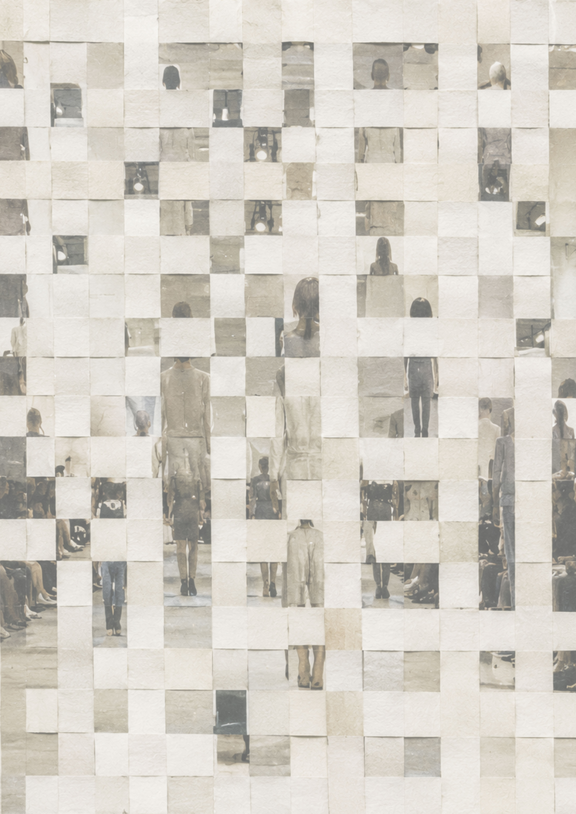
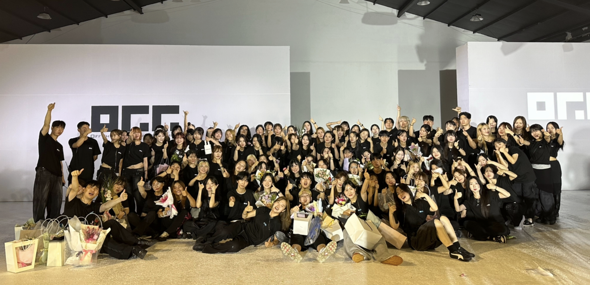
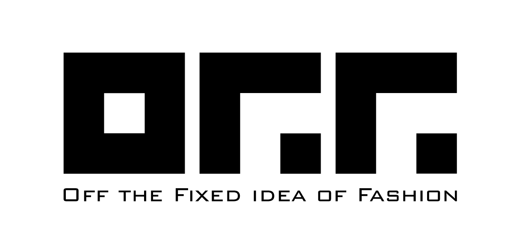
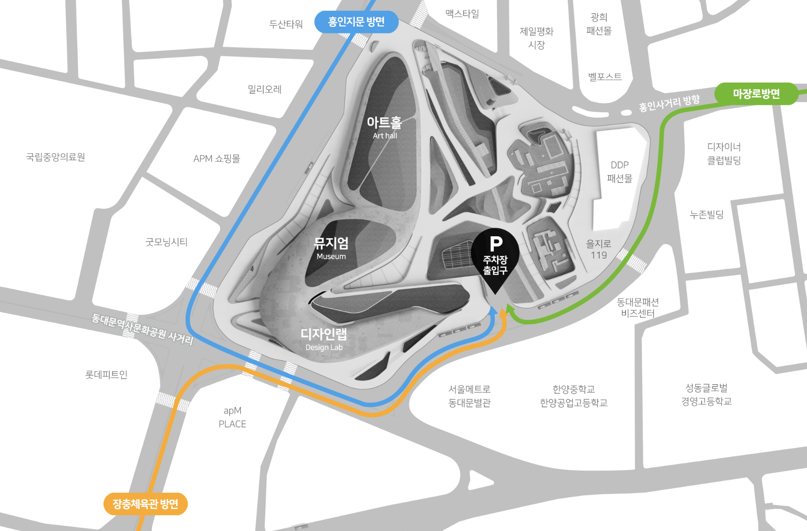

고서진 KO SEO JIN
Overwired‘Overwired ’는 끊임없이 사고하고 스스로를 조율하려는 태도에서 출발한다. 긴장감 있는 실루엣과 비대칭 디테일은 스스로를 통제하려는 내면의 흐름을 나타내며, 패브릭 콜라주와 하단으로 갈수록 흐트러지고 확장되는 형태는 통제에서 벗어나 균형을 찾아가는 과정을 표현한다. 텍스처의 대비를 통해 복잡하게 얽힌 사고와 감정의 흐름을 시각적으로 드러낸다.

Mobile Invitation
입장 전 티켓 버튼을 눌러 좌석을 확인해 주세요.
확인할 폴더를 선택해 주세요.
행사 안내
확인할 폴더를 선택해 주세요.
‘Overwired ’는 끊임없이 사고하고 스스로를 조율하려는 태도에서 출발한다. 긴장감 있는 실루엣과 비대칭 디테일은 스스로를 통제하려는 내면의 흐름을 나타내며, 패브릭 콜라주와 하단으로 갈수록 흐트러지고 확장되는 형태는 통제에서 벗어나 균형을 찾아가는 과정을 표현한다. 텍스처의 대비를 통해 복잡하게 얽힌 사고와 감정의 흐름을 시각적으로 드러낸다.
타인의 온도를 맞추기 위해 늘 나를 가장자리에 두었습니다. 긍정이라는 가면 뒤에 서 거절하지 못하는 마음은 때로 스스로를 불투명하게 만들었지만, 그 시간은 역설적으로 나를 단단한 끈기로 채우는 과정이기도 했습니다. 이제 그 모호한 배려를 걷어내고, 웅크려 있던 내 안의 목소리를 선명하게 펼쳐 보려 합니다.
이 의상은 쉽게 흔들리는 내면을 가진 사람이 스스로를 지키기 위해 만든 부드러운 갑옷을 표현한다. 갑옷처럼 분절된 하의와 바깥쪽 레더 소재는 외부를 막아내는 방어적 태도를, 민소매 상의와 몸에 밀착되는 안쪽 소재는 그 안에 그대로 남아 있는 취약함을 드러낸다. 단단함과 연약함이 공존하는 성격을 하나의 보호 장치처럼 풀어냈다.
스트랩 디테일과 드레이프 숄더, 중앙 지퍼 디테일은 흔들리는 감정 속에서도 스스로 중심을 잡으려는 의지를 표현한다. 길게 흐르는 쉬폰 레이어는 선택의 기로에서 끊임없이 고민하며 균형을 찾는 내면을 그림자처럼 드러내며, 결국 도약의 힘이 됨을 상징한다.
몸을 감싸는 실루엣과 반복적으로 배열된 디테일은 스스로를 통제하고 정렬하려는 심리를 표현한다. 가슴 중앙의 흩날리는 스트립 장식은 억눌린 내면과 시선의 흐름을 상징하며, 규칙적인 구조 속 미세한 불균형을 통해 완벽주의 이면의 불안과 긴장을 드러낸다. 절제된 형태와 흔들리는 디테일의 대비로 내면의 감정을 표현했다.
신화 속 보호의 방패를 의미하는 Aegis에서 영감을 받아, 외부로부터 스스로를 보호 하려는 태도와 동시에 타인과의 관계를 차단하며 고립되는 이중성을 표현하고자 하 였다. 높게 올라오는 넥라인은 몸을 감싸고 보호하는 구조이자, 스스로를 내부에 가 두는 장치로 사용되었다. 이를 통해 보호와 단절이 공존하는 심리적 상태를 시각적으 로 드러내고자 하였다.
겉으로는 거칠고 자유로워 보이지만, 내면에서는 끊임없이 스스로를 통제하고 검열 하는 존재. 완벽해지기 위해 자신의 내면과 싸우며, 투쟁을 멈추지 않는 카우보이를 통해 모순 속에서도 전진하는 불완전한 인간의 초상을 담았다.
완벽을 추구하는 성향 속에서 끊임없이 수정되고 축적되는 과정을 표현하였다. 각진 상체는 스스로 세운 기준과 통제를, 반복된 스티치와 레이어, 매듭 디테일은 더 나은 결과를 위해 계속해서 손대고 고민하는 집요함을 의미한다. 복면은 불완전한 모습을 감추고 싶은 자기검열의 심리를 상징한다.
직설적이고 단단해 보이는 외면과 달리, 내면에는 부드럽고 유순한 감정이 공존하는 성격을 표현했다. 각지고 구조적인 실루엣은 스스로를 보호하려는 태도를, 유연하게 흐르는 곡선 디테일과 드레이프는 숨겨 진 따뜻한 내면을 상징한다. 상반된 요소들의 조화를 통해 긴장감과 부드러움이 공존하는 모습을 담아냈다.
완벽이라는 정형화된 틀을 벗어나 불완전함 속 진정한 나를 발견하는 과정을 담았습니다. 직선과 곡선이 교차하는 머메이드 실루엣은 정답과 오답이 결국 하나의 흐름으로 이어져 있음을 상징합니다. 고정된 답을 쫓기보다 나만의 궤적을 긍정하며 나아가는 능동적인 태도를 표현했습니다. 이 모든 선택이 나를 완성하는 과정이며, 그 자체로 저를 의미합니다.
연상시키는 짙은 실루엣 위로 파랑과 코랄빛 드레이프를 더해, 먹구름이 지나간 뒤 해가 뜨는 순간의 구름 가장자리 빛을 시각화했다. 드레스의 상체부분은 어두운 베이스 원단에 실버 파이핑을 더해 어둠 사이 스며드는 빛의 순간을 표현했다. 목 위로 감기는 스카프는 길게 늘여진 스클 장식이 함께 붙어 있는데 이는 지난 날의 긴 후회의 시간을 나타냈다. 구름은 감정의 무게와 내면을 나타내고 흐르는 드레이프와 은은한 광택은 후회와 희망이 공존하는 감정의 흐름을 표현했다
감정이 무너지는 순간을 하나의 과정으로 바라본 작업이다. 통제되지 않는 불안과 혼란, 그리고 그 안에서 반복적으로 흔들리는 상태를 ‘disaster’로 정의한다. 그러나 이 파괴는 단순한 붕괴가 아니라, 감정의 본질을 드러내는 과정이기도 하다. 무너짐 이후 남은 것들을 다시 바라보고 재구성하는 흐름을 통해, 결국 감정은 새로운 형태의 균형으로 이어진다. 이 작업은 감정의 불완전함과 그로부터 만들어지는 또 다른 가능성을 시각적으로 표현한다.
“밝은 태도 아래 축적되는 감정” /겉으로 보이는 밝고 가벼운 분위기와 그 안에 숨겨진 감정의 무게를 함께 표현하고자 한다. 긍정적인 태도는 앞으로 나아가게 만드는 힘이 되기도 하지만, 동시에 감정을 가리는 장치가 될 수도 있다는 점을 시각적으로 풀어냈다.
미니멀 실루엣의 미니 드레스를 통해 현실적이고 이성적인 성격을 표현하였으며 이 형태에는 창작에 있어서 스스로에게 느끼는 한계의 이미지를 담아냈다. 이러한 실루엣에 더해 드레스의 겉감은 반투명 원단으로, 안감은 나의 내재된 창의력을 의미하는 프린트 원단을 사용해 창의력에 대한 한계와 동시에 내 안에 내재되어 있는 창작의 원천에 대해 표현하였다. 겉감에 더한 빨간 선은 직선적 사고 방식, 등 뒤에 파인 느낌표의 형태는 창작의 과정 끝에서 내가 느끼는 만족감을 의미한다
흰색 비대칭 구조와 검은 기하학적 선을 중심으로, 붉은 높은음자리표와 기타를 포인트로 더했다. 절제된 색 대비 속에서 음악의 긴장감과 무대 위의 선명한 존재감을 표현한 의상이다.
어린 시절 완벽한 모습을 유지하고 싶었던 감정을 바탕으로, 정리된 형태 속 어린아이의 미세한 어긋남과 어설픈 균형을 표현했다. 이번 컬렉션은 아직 미숙했던 아이가 자신만의 방식으로 완벽을 만들어가던 과정을 시각화한 작업이다.
완벽한 시작 대신 멈추지 않는 과정을 시각화합니다. 디자인의 가장 작은 단위인 점은 제가 겪 어온 시행착오와 매 순간의 노력을 상징합니다. 흩어져 있을 때는 미완의 상태처럼 보이지만, 이를 포기하지 않고 끈기 있게 이어 붙였을 때 비로소 견고한 선이라는 결과물이 탄생합니다.
재미있으면서도 불안하고, 답이 보일 듯 보이지 않는 미로 위, 모순된 감정이 엉켜 만든 답답함 속에서 우리는 기어이 길을 걷습니다. 부디 아득한 미로에서 당신의 해답을 마주하기를
편하고 이상적인 사회의 틀을 평범한 옷이라고 두고 옷이 뒤집히거나 휘어진 디자인을 하여 개성있고 과감한 시도를 하는 것으로 비유했다. 상의는 바지의 안쪽이 위로 올라가있는 디자인이고 하의는 같은 면적의 직선적 도형들이 반복되어있지만 휘어진 디자인이다 전체적으로 틀에 갇히지 않은 움직임이 편한 자유로운 오버사이즈 실루엣이다. 비비드한 색을 사용해 개성을 표현했다.
이 디자인은 콘크리트 틈 사이에서 자라나는 민들레의 모습을 자신의 성장 과정과 겹쳐 보며 탄생하게 되었습니다. 어디서든 뿌리를 내리며 힘든 환경 속에서도 스스로 살아남는 생명력, 그 안에 담긴 힘의 아름다움을 패션이라는 형태로 표현하고자 했습니다. 또한 단순한 자기 표현에 그치지 않고, 이 작품을 통해 에너지와 힘을 전하고 싶습니다.
이 디자인은 외부 환경과 자신을 구분하여 자극과 정보를 주체적으로 수용하는 태도를 나타낸다. 자극을 걸러내기 위해 무조건적인 차단이 아닌, 나만의 보호막을 통해 혼돈을 정제하는 인지적 경계를 표현한다. 비즈의 선형적 흐름은 혼돈에서 정제된 정보의 질서 있는 유입을 시각적으로 보여준다.
철사로 고정된 거대한 후드는 용의 입을 연상시키며, 버건디 안감은 그 안쪽 깊이를 강조한다. 그 사이에 놓인 모델의 얼굴은 용의 머리처럼 보이도록 구성했다. 몸을 감싸는 타이트한 실루엣과 골드 패턴은 강한 존재감과 자신감을 드러내고, 오간자 벌룬 스커트는 구름처럼 부풀어 흐름을 만든다. 구름을 가르고 올라가는 ‘凌雲’의 이미지를 담았다.
'세상을 예쁘게 그리며 살아라'. 나만의 개성이 희미해진 듯한 순간마다 내 이름의 뜻을 되새기며 초심으로 돌아간다. 이번 디자인은 이름의 의미, 그리고 그 속의 채(彩)자를 모티프로 하여 나만의 고유성을 다시 정의하는 과정을 보여준다. 이는 내면의 무늬를 이름이라는 구심점으로 풀어낸 결과물이며, 나만의 결을 통해 삶의 주체성을 지키겠다는 단단한 의지의 표현이자 나를 향한 깊은 이해의 결과물이다
오래된 관계에서 느껴지는 익숙함과 안정감의 감정에서 시작되었다. 소파의 실루엣을 차용한 아우터는 기대어 쉬는 듯한 편안함과 보호받는 감각을 표현하였으며, 성글게 짜인 니트는 부드러운 온기와 관계의 따뜻함을 담아내고자 했다. 또한 셔츠를 덮어주던 기억에서 착안한 스커트를 통해 익숙한 돌봄과 포근한 감정을 시각적으로 풀어내었다.
산속 사찰 입구에서 보았던 압도적인 이질적이고도 매혹적인 형상들. 그 기억은 시간이 지나 패션이라는 언어로 변했다. 이 디자인은 불교의 신적인 존재들의 분위기를 현대적으로 해석하며, 강렬한 색채와 조각 같은 실루엣으로 존재감 을 드러낸다.
의학 용어. 봉합, 꿰매다, 상처를 잇는 실. 요구되는 삶 속에서 스스로를 끊임없이 꿰매며 완벽 해지려 할수록 균열은 깊어지고, 감춰진 내면은 봉합된 틈 사이로 새어 나와 어느새 자신을 유지하는 삶의 방식이 된다. 그러나 상처는 지워야 할 흔적이 아닌, 현재의 자신을 이루는 일부가 되었음을 깨닫는다. 무너지지 않기 위해 자신을 이어 붙이며 살아온 존재는 더 이상 상처를 치부로 여기지 않고 드러내며, 비로소 살아내는 삶이 아닌 ‘살아가는 삶’ 을 향해 나아간다.
사람은 타인에게 자신의 모든 모습을 드러내지 않은 채 살아간다. 관계 속에서 보 여지는 모습은 대부분 정제된 일부이며, 실제의 감정과 내면은 쉽게 드러나지 않는다. 나는 이러한 상태를 우울하거나 지친 사람이 이불 속에 몸을 숨긴 채 외부와 단절되기를 원하는 모습에 빗대어 표 현하고자 했다. 몸을 감싸는 형태와 불투명한 소재를 활용해, 보여지는 모습 뒤에 감춰진 내면과 드러내고 싶지 않은 감정을 시각적으로 표현하고자 하였다.
사막에서도 살아남는 전갈 데스스토커의 생존성을 바탕으로 디자인했다. 입을 가리는 후드, 워머, 긴 스커트는 몸을 감싸 보호하는 사막 복식에서 영감을 받았고, 후드 뒤 원형 디테일은 몸에 밀착해 착용하는 러닝백 구조로 생존을 위한 장비의 이미지를 담았다. 여 기에 전갈 꼬리 패턴을 더해 날카로운 경계심과 생존 본능을 강조하였다.
“고쳐 이어가지만 지우지는 않는다.” 흔적, 마모, 흔들림은 한때 지워내야 할 결함처럼 느껴졌다. 그러나 반복된 균열과 닳음의 시간은 결국 현재의 나를 이루는 구조가 된다. 흐트러짐을 제거하는 대신 덧대고 이어가며 스스로를 재구성하는 과정을 담아낸다. 기워 지고 남겨진 흔적들은 지나온 시간을 증명하며, 온전한 ‘나’의 형태로 축적된다.
보장된 공학도의 길을 벗어나 군 복무 중 예술이라는 새로운 세계를 향해 자신을 던졌습니다. 저는 스스로를 한계까지 몰아넣는 환경에서 가장 밝게 빛납니다. 실패를 두려워하지 않는 '삐딱한 선택'과 이를 성과로 바꾸어 놓는 치열한 '노력'을 통해, 조직의 고정관념을 깨고 새로운 가치를 창출하여 자아를 실현하기 위한 과정을 표현한다.
원래의 글 위에 새로운 글을 덧쓰며 이전의 흔적이 남아 있는 고문서를 의미하는 단어로, 지워지지 않은 내면의 흔적과 여러 자아의 층이 공존하는 모습을 표현하 고자 하였다. 시간의 축적과 겹쳐진 감정의 흔적을 통해 하나의 모습만으로 정의 될 수 없는 자아의 복합성을 드러내고자 한다.
헌신은 사람과 감정, 가치를 지켜내는 마음이며 공감과 인간성에 대한 성찰이라고 생각합니다. 옷이 기억과 감정을 담아낸 듯, 변화가 빠르고 기계적으로 느껴지는 세상 속에서 인간적인 손길과 공동체의 연결과 공유된 가치를 다시 바라보게 되었습니다. 부드러움 속에서도 중심을 잃지 않고 인간미의 아름다움을 지켜가는 태도를 시각화 하여 표현하고자 합니다.
화려함을 위해 드레스 안쪽으로 가려져야 했던 ‘파니에’를 밖으로 꺼내어, 성장을 위해 감내한 압박과 투쟁의 시간을 가시화했다. 턱 끝까지 쌓인 구조물은 스스로를 향한 압박을, 살구빛 스티치는 무너진 자아를 기워낸 회복의 흔적을 의미한다. 책장처럼 팔락거리는 밑단의 플리츠는 과거의 기록이 현재를 지탱하는 기반임을 증명하며, 불완전한 미학을 아방가르드한 실루엣으로 표현하였다.
핏하게 몸을 감싸는 니트와 늘어진 레더 조직, 인커스틱 페이팅이 더해진 오간자 볼륨을 통해 탈피 직전의 긴장과 감정의 잔상을 표현했습니다. 피부처럼 얇은 레이어와 상처처럼 남은 흔적은 불완전한 성장의 아름다움을 상징합니다.
낯가림 속에서 관찰을 통해 안정감을 얻는 과정을 담았다. 코쿤 실루엣의 후드는 나 자신을 감싸고 보호하며 경계하는 듯 보이지만 그 사이 시선이 트이는 공간을 통해 관찰을 하며 오히려 그 속에서 안정거리를 두어 안정감을 느낄 수 있음을 상징한다. 마냥 나를 숨긴다기 보다는 알을 꺠고 나오는 듯한 실루엣으로 나의 평화와 안정을 내 스스로가 완성해나감을 의미한다.
이 작품은 서로 다른 이야기와 감정이 하나의 형태 안에서 연결되고, 점차 확장되며 번져가는 흐름을 시각적으로 표현한 디자인이다. 단단한 구조의 베이스 위에 가벼운 소재의 레이어를 겹겹이 더해 형태의 대비를 만들고, 이를 통해 안정과 흐름이 공존하는 실루엣을 완성하였다. 특히 옆과 뒤로 확장되는 볼륨은 감정과 서사가 한 지점에 머무르지 않고 주변으로 퍼져나가는 과정을 나타내며, 레이어가 겹쳐질수록 자연스럽게 형성되는 깊이감은 다양한 해석이 더해지는 패션의 특성을 반영한다.
Sensynity는 예민함(Sensitivity), 공명(Synchronicity), 그리고 우호(Amity)가 조화를 이룬 합성어다. 이는 가공되지 않은 날카로운 예민함 을 다듬어 타인과 공명하는 깊은 상태를 의미한다. 거친 모서리를 깎아내어 따뜻하고 공유된 소속감의 원을 만드는 것이다. 얇은 선은 예민함, 날카로움, 다듬어지지 않은 날 것을 의미하는데 이는 같은 간격으로 예쁘게 굽어있다. 즉 기술을 얻었음을 의미하고, 여러갈 래의 선과 조화롭게 섞여있는 것은 어딘가에 소속되어 최종 목표를 이루었음을 뜻한다.
상업적인경향이강한패션이라는형식속, 이작품은어떠한조건에구애받지않고설계되었다, 나다움을실현하고상승하는자유의직선을표현했다.
아직 정의되지 않은 자아와 패션 속에서 끊임없이 흔들리는 감정을 담아낸 드레스이다. 넘쳐흐르는 물결을 연상시키는 유동적인 실루엣과 레이어를 통해 혼란과 가능성이 공존하는 상태를 표현했으며, 패션이라는 거대한 흐름 속에서 나만의 방향과 스타일을 찾아가고자 하는 과정을 담고 있다.
전통이라는 뿌리 위에서 현대라는 줄기를 타고 피어난 새로운 꽃의 형태를 표현하고자 합니다. 박제된 전통이 아니라, 지금의 감각으로 다시 해석되어 살아 움직이는 한국적인 미를 담고자 했습니다. 뿌리는 전통의 생명력을 의미하며 스커트로 표현했고, 줄기는 현대를 관통하는 단단한 기준을 의미하는 재킷으로 표현했습니다. 또 꽃은 인연 속에서 새롭게 피어난 형태를 의미하며, 어깨와 소매에 있는 한복 매듭으로 나타냈습니다. 전통과 현대가 자연스럽게 어우러질 수 있도록 디자인 했습니다.
수면 위에 비친 햇살과 꽃이 어우러져 일렁이는 순간을 표현하고자 하였다. 유연하게 흐르는 실루엣과 드레이프는 물결의 흐름과 생동감을 나타내며, 크리스탈 오간자와 비즈 장식으로 수면 위에 반사되는 빛의 반짝임을 표현했다. 일상 속 자연에서 느낀 평온하고 아름다운 순간의 인상을 의상에 담아내고자 하였다.
자연스럽게 흐르는 실루엣과 로맨틱한 분위기를 중심으로, 가장 아름다운 순간의 감정과 설렘을 담아내고자 했습니다. 부드러운 무드를 통해 웨딩드레스가 단순한 의상을 넘어 오래 기억될 순간의 분위기와 감정을 표현하는 존재가 되길 바라는 마음을 담았습니다. 또한 시간이 지나도 기억 속에 따뜻하게 남는 낭만적인 순간을 표현하고 싶었습니다.
청춘의 가장 찬란한 순간과 쉽게 시들지 않는 꿈, 그리고 패션을 향한 열 정을 담아낸 디자인이다. 흔히 ‘한 떨기 꽃’으로 표현되는 청춘의 의미처럼, 가장 아름답게 피 어나는 순간의 감정과 꿈을 가장 빛나게 만들어주는 열정을 함께 담고자 하였다. 또한 자유롭 고 유연한 흐름을 통해 끝없이 확장되는 가능성과 순간의 아름다움을 표현하였다
청춘의 가장 찬란한 순간과 쉽게 시들지 않는 꿈, 그리고 패션을 향한 열 정을 담아낸 디자인이다. 흔히 ‘한 떨기 꽃’으로 표현되는 청춘의 의미처럼, 가장 아름답게 피 어나는 순간의 감정과 꿈을 가장 빛나게 만들어주는 열정을 함께 담고자 하였다. 또한 자유롭 고 유연한 흐름을 통해 끝없이 확장되는 가능성과 순간의 아름다움을 표현하였다
대중적이지 않다는 이유만으로 특정 스타일이 현대복식의 기준에 맞춰 변화해야 하는지에 대한 질문에서 시작되었다. 과장된 실루엣과 장식성을 유지한 채 패션쇼의 언어로 재구성함으로써, 다양한 패션 문화 또한 하나의 예술적 표현으로 존재할 수 있음을 보여주고자 한다.
‘bada’는 끊임없이 변화하면서도 고유의 흐름을 유지하는 바다의 속성에서 출발합니 다. 잔잔함과 거침, 투명함과 깊이를 동시에 지닌 바다는 하나의 감정이 아닌 복합적인 상 태를 상징합니다. 이번 컬렉션은 이러한 이중적인 흐름을 의복에 담아내며, 유연한 실루엣 과 대비되는 구조, 그리고 다양한 텍스처의 조합을 통해 표현됩니다. ‘bada’는 고정되지 않 은 정체성과 감정의 파동을 시각화하며, 입는 이로 하여금 자신만의 흐름을 만들어가도록 제안합니다.
‘bada’는 끊임없이 변화하면서도 고유의 흐름을 유지하는 바다의 속성에서 출발합니 다. 잔잔함과 거침, 투명함과 깊이를 동시에 지닌 바다는 하나의 감정이 아닌 복합적인 상 태를 상징합니다. 이번 컬렉션은 이러한 이중적인 흐름을 의복에 담아내며, 유연한 실루엣 과 대비되는 구조, 그리고 다양한 텍스처의 조합을 통해 표현됩니다. ‘bada’는 고정되지 않 은 정체성과 감정의 파동을 시각화하며, 입는 이로 하여금 자신만의 흐름을 만들어가도록 제안합니다.
이 착장은 시장 현실과 이상의 충돌로 만들어진 결과물이다. 섬세한 레이스로 미적 이상을, 복잡한 니트 꼬임과 비대칭 실루엣으로 대중성과의 간극을 시각화하여 패션계에 지원 후 느낀 대조적 가치들을 하나의 룩으로 조화시켰다. 이처럼 패션계에 지원한 이유인 ‘상반된 개념을 해체하고 재조합하는 과정’과, ‘새로운 가능성과 독창성을 증명’해 낼 디자이너로서의 목표를 다크로맨틱 무드로 풀어냈다.
사슬은 더 이상 우리를 통제하는 속박의 도구가 아닌 연대의 증표이며 내면의 자아는 타오르는 축제의 분위기 속 폭발적으로 해방된다. 천과 사슬, 비즈의 얽힘으로 표현한 연결 속에서 우리 안의 무한한 자신은 폭발하듯 사방으로 피어난다. 길게 늘어뜨린 망토는 자유로운 세계를 만들어 걸어나가겠다는 강한 의지이다.
기존의 틀과 규범 속에서 억눌려 있던 감정이, 내면의 의지와 함께 점차 외부로 확장되는 순간을 표현하고자 하였다. 절제된 제복 형태의 구조와 대비되는 러플 디테일을 통해, 통제된 프레임 속에서도 끊임없이 드러나고 확장되는 감정의 흐름과 능동적인 태도를 시각화하였다.
셔츠는 일본의 도자기 기법인 킨츠키를 적용한 자수가 들어가 있습니다. 베스트는 한복의 당의에서 영감을 받아 테일러 베스트의 옆선을 트이고 금박 장식을 추가했습니다. 서양의 플레어 팬츠, 플리츠 스커트를 하의로 하여 동양과 서양,남성과 여성의 중립이 느껴지도록 구상했습니다.
영화 Black Swan의 강박적인 완벽함과 무대 위 긴장감에서 영감을 받아 디자인 한 의상이다. 스스로 만들어내는 과정에서 느끼는 의미처럼 단순한 아름다움보다 강렬한 존재감과 감정 을 표현하는 데 집중하였다. 발레 의상과 무대의상의 요소를 결합해 하나의 공연 장면처럼 기억에 남기를 원한다.
영화 Black Swan의 강박적인 완벽함과 무대 위 긴장감에서 영감을 받아 디자인 한 의상이다. 스스로 만들어내는 과정에서 느끼는 의미처럼 단순한 아름다움보다 강렬한 존재감과 감정 을 표현하는 데 집중하였다. 발레 의상과 무대의상의 요소를 결합해 하나의 공연 장면처럼 기억에 남기를 원한다.

DDP SHOWROOM 1F · 10am - 7pm
나를 바라보는 다양한 시선
우리는 인터뷰, 자기소개, 증명사진처럼 수많은 순간 속에서 스스로를 설명하며 살아갑니다. 하지만 '나'는 하나의 답이나 하나의 모습으로 정의될 수 없습니다. INTER-VIEW는 프레임 안과 밖을 오가며 변화하는 자아를 따라가고, 결국 있는 그대로의 자신과 마주하는 과정을 담은 전시입니다.
전시는 FRAMED, IN BETWEEN, UNFRAMED 세 개의 섹션으로 구성됩니다. 각 공간을 따라 걸으며 나를 규정하는 시선에서 시작해, 변화의 과정을 지나, 있는 그대로의 자신을 발견하는 여정을 경험해 보세요.
당신은 어떤 틀에서 자신을 바라보고 있는가?
사회가 만든 기준과 타인의 시선, 그리고 스스로 만든 프레임 속에서 바라본 '나'를 다양한 구조물을 통해 시각화했습니다. 관람자가 자신을 규정해 온 기준을 자연스럽게 돌아볼 수 있도록 구성한 공간입니다.
구조물의 안과 밖을 자유롭게 거닐며 시선에 따라 변화하는 이미지와 형태를 경험해 보세요. 나를 규정해 온 프레임을 돌아보고, 그 너머의 '나'를 마주하는 시간을 만나볼 수 있습니다.
정의된 '나'와 아직 정의되지 않은 '나' 사이를 탐색하다.
정해진 기준 속에서 끊임없이 변화하는 자아를 의상, 텍스타일, 아카이브를 통해 시각화합니다. 완성된 모습보다 변화의 과정과 흔적에 집중한 공간입니다.
작품을 다양한 각도에서 바라보며 변화하는 이미지와 형태를 경험해 보세요. 조각난 이미지와 재배열되는 요소를 따라가며 자아가 끊임없이 변화하고 재구성되는 과정을 마주할 수 있습니다.
프레임 밖, 있는 그대로의 나를 바라보다.
와비사비 미학을 바탕으로 흔들림과 결핍, 정리되지 않은 감정까지도 나를 이루는 일부로 바라봅니다. 불완전함 속에 존재하는 본연의 아름다움을 이야기합니다.
완성된 자아를 찾기보다 프레임 밖의 불완전한 모습과 마주해 보세요. 지금의 모습 또한 이미 자신을 이루는 소중한 일부임을 발견할 수 있습니다.

O.F.F.는 Off the Fixed Idea of Fashion의 약자로, 고정된 패션의 틀을 깨고 새로운 가능성을 탐구하는 전국 대학생 패션 연합회입니다. 서울, 대전, 광주, 대구, 부산까지 지부를 확장해 온 O.F.F.는 패션을 사랑하는 학생들이 자유롭게 협업하고 각자의 비전을 실현하는 장을 만들어가고 있습니다.
연합회의 핵심 행사는 전국 지부가 함께 준비하는 패션 행사입니다. 모든 과정은 학생들의 손으로 직접 기획되고 운영되며, 런웨이와 전시, 퍼포먼스를 통해 창의성과 열정을 나누는 소통의 장을 만듭니다. 이번 30th O.F.F. Fashion Show 역시 패션으로 하나 되는 관계와 에너지를 관객에게 전하고자 합니다.

도로명 · 서울 중구 을지로 281, 1층
지번 · 서울 중구 을지로7가 143, 1층

DDP 동측(을지로 119 방향, 디자인랩 건물 옆)
시간 주차 · 1시간 4,800원 (5분당 400원)
일 주차 · 1일 최대 50,000원